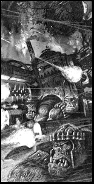

|
As Yarrick and Ghazghkull fought over Hades, the remaining Ork columns rumbled southwards towards the only other surviving settlements - Acheron and Tartarus. At Acheron, as the Orks made their assault, the defenders swore to die rather than surrender. Such dedication was admirable but, in the end, unnecessary. The Orks were ripped asunder by the thunder of bombs and the crash of gigantic cannons as the sky overhead filled with the shapes of Space Marine Thunderhawk gunships.The Blood Angels led the reinforcements, the military commanders of Armageddon ignoring von Strab's authority to follow Dante's legendary leadership. Von Strab was arrested for his crimes against the Imperium, though he later escaped.  With the coming of the Ultramarines, Salamanders and Blood Angels, the tide began to turn on Armageddon. The factories of Acheron and Tartarus churned out weapons and vehicles by their thousands, whilst the Space Marines began to force the Orks to retreat from the south. If Ghazghkull had turned his attention southwards and made immediate plans to thwart this sudden counter-attack, Armageddon may still have fallen. However, the siege of Hades Hive had become something more than simply a military objective. Yarrick's uncompromising resistance challenged Ghazghkull's ability and reputation as a Warlord - a challenge he could not back down from. The Ork Warlord gathered every available warband to his army and, with this almighty force, fell upon Hades Hive with the hatred an Ork reserves only for his greatest enemy. Despite desperate rationing, supplies in Hades had all but run out, and seeing the mass of Orks preparing to attack, Yarrick decided that the city could no longer stand. Those who could be were evacuated by daring shuttle runs, risking the Ork anti-aircraft fire and interceptors to escape. The Space Marines arrived too late to save Hades, attacking the Orks even as they smashed their way inside. Yarrick was almost slain, but his iron will stopped him succumbing to the near mortal wounds he suffered. Whilst the fate of Hades was being sealed, Ghazghkull revealed the true extent of his cunning. Masses of Ork reinforcements poured in from the west, intent upon Tartarus Hive in the south. If Tartarus was overrun, the industrial power in the south would be smashed and the Orks could easily consolidate their position while the Imperial armies were being moved down from the north. |
. |
As the Orks assaulted Tartarus, their vanguard already pushing into the streets of the hive city, Dante made his move. Transporting his Blood Angels back to their orbiting ships, he led a massive drop pod assault into the heart of the Orks. Though horrendously outnumbered, the Blood Angels set to massacring any Ork unlucky enough to be caught by them. Fuelled by their righteous hatred, the Blood Angels slew nearly half of the entire Ork army, and it was rumoured that Ghazghkull himself had been felled, though this later proved to be false. Leaderless and assaulted on all sides by the Emperor's forces, the Orks refused to surrender. Some fought to the death, others slipped into the ash wastes and eventually made their way to the jungles between the two continents of Armageddon. As is the way with Orks, the greenskins were never fully eradicated from Armageddon, and it is unlikely that they ever will be. In the depths of the jungles and in the ruins of fallen hives they continued to breed, only to be hunted down by Imperial kill-teams. Hades Hive still lies shattered, whilst the rebuilding of Tartarus and Infernus has only just begun. The legacies of the Second Armageddon War are still plain to see.
|